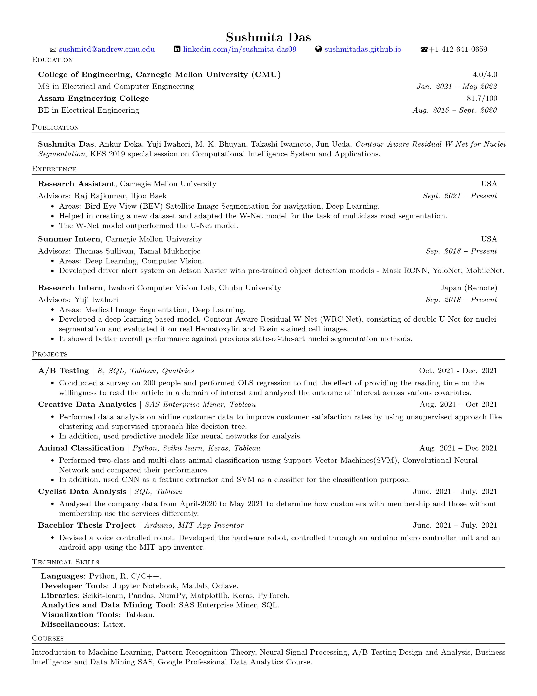
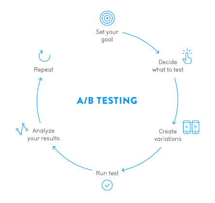
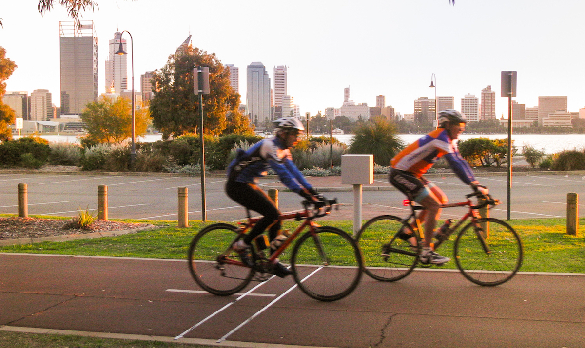
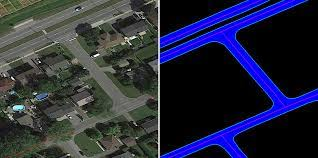
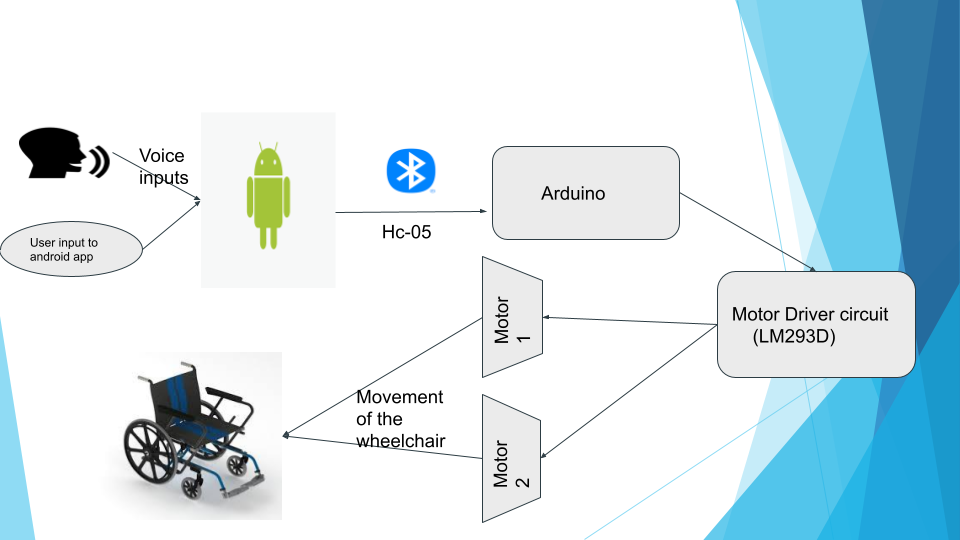

I am pursuing MS in ECE at Carnegie Mellon University, Pittsburgh. I will graduate in May 2022.
I have done several courses related to Machine Learning, Data Science and Data Analytics like Introduction to Machine Learning, Pattern Recognition Theory, Business Intelligence and Data Mining with SAS,
A/B Testing Design and Analysis, Google Professional Data Analytics Course. I also have some experience on using Deep Learning for real life problems like
Nuclei Segmentation and Bird Eye View Segmentation. The Nuclei Segmentation work was published on Knowledge-Based and Intelligent Information & Engineering Systems: Proceedings of the 23rd International Conference KES2019.
Please refer below to view the publication and to check out my other projects related to Data Analysis, Data Science and Machine Learning.
I am looking for full time oppurtunities in the field of Data Sciene starting from June 2022.

Analyze Electricity Consumption Data of Nigeria to help make power related decisions such as regulating the power-cuts to minimize inconvenience of households. Understand the time-coverage of the data, tabulate any gaps in the records, and analyze available concurrent and continuous time periods to develop summary statistics of observed electric power availability.

Conducted a survey on 200 people and performed Ordinary Least Squares regression to find the effect of providing the reading time on the willingness to read the article in a domain of interest and analyzed the outcome of interest across various covariates.
Performed data analysis on airline customer data to improve customer satisfaction rates by using unsupervised approach like clustering and supervised approach like decision tree.
In addition, used predictive models like neural networks for analysis.

Analysed the company data from April-2020 to May 2021 to determine how customers with membership and those without membership use the services differently.

Developed a deep learning based model, Contour-Aware Residual W-Net (WRC-Net), consisting of double U-Net for
nuclei segmentation and evaluated it on real Hematoxylin and Eosin stained cell images. It showed better overall performance against previous state-of-the-art nuclei segmentation methods.

Helped in creating a new dataset and adapted the W-Net model for the task of multiclass road segmentation.
The four classes were background, road, road edge and road lane marking. The dataset was composed of satellite images of road in the Pittsburgh city near CMU campus.
The W-Net model outperformed the U-Net model.
Performed animal classification using Support Vector Machines(SVM), Convolutional Neural Network and compared their performance.
In addition, used CNN as a feature extractor and SVM as a classifier for the classification purpose.

Performed data cleaning and analyzed weather and electricity consumption data of one year period from France to draw conclusions based on weather pattern and energy usage and to forecast energy consumption based on weather variables.

Devised a voice controlled robot. Developed the hardware robot, controlled through an arduino micro controller unit and an android app using the MIT app inventor.